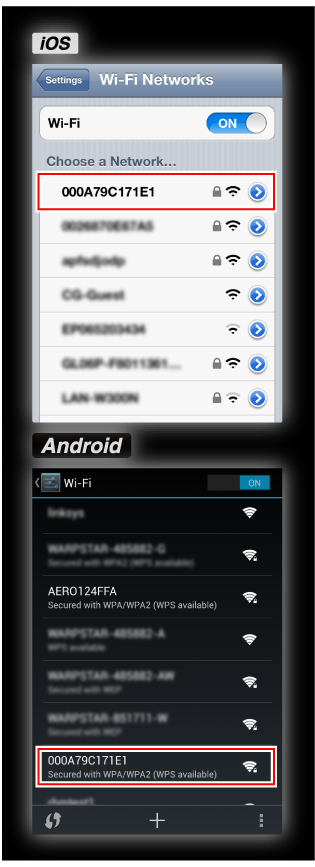
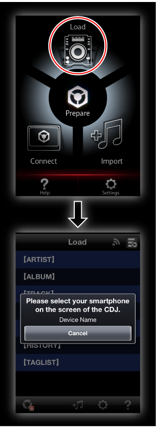

Informations supplémentaires
CDJ-2000NXS Guide de raccordement
Pour établir des communications entre un dispositif portable et le CDJ-2000NXS, le SSID et le mot de passe du point d’accès sans fil (Wi-Fi) où le CDJ-2000NXS est connecté doivent être vérifiés.
Avant d’utiliser le CDJ-2000NXS, lisez attentivement la brochure “A lire avant l’utilisation” et le “Mode d’emploi” sur le CD-ROM fourni avec le CDJ-2000NXS.
1Raccordez le point d’accès sans fil (Wi-Fi) et le CDJ-2000NXS à l’aide d’un câble LAN.

2Vérifiez le SSID et le mot de passe indiqués sur le point d’accès sans fil (Wi-Fi), dans ses instructions, etc.

3Ouvrez l’écran des réglages Wi-Fi du dispositif portable, tapez sur le SSID du point d’accès, puis saisissez le mot de passe.

4Lancez rekordbox sur le dispositif portable, puis tapez sur [Load] sur le menu principal.
 Lorsque des lecteurs DJ pouvant se connecter sont localisés, le message “Veuillez sélectionner votre smartphone sur l'écran du CDJ/XDJ.” apparaît.
Lorsque des lecteurs DJ pouvant se connecter sont localisés, le message “Veuillez sélectionner votre smartphone sur l'écran du CDJ/XDJ.” apparaît.

5Lorsque la touche [rekordbox] du CDJ-2000NXS est pressée, la liste des dispositifs portables pouvant se connecter apparaît sur l’afficheur principal du CDJ-2000NXS.